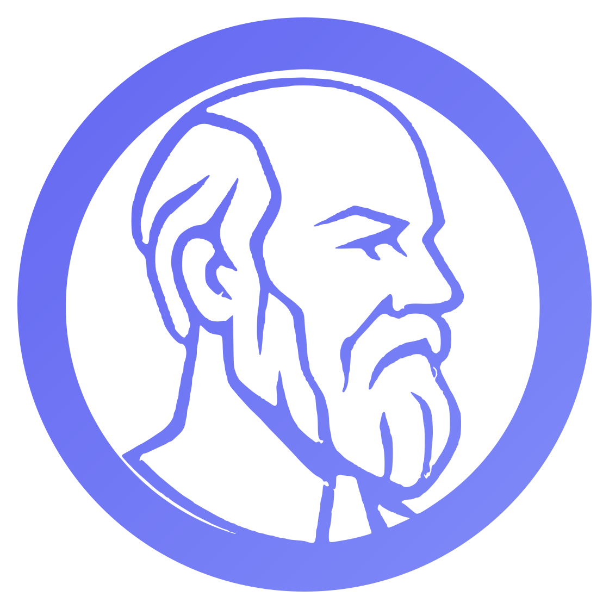

Kartica
klikni za okret

SokratBilo koje gradivo · bilo koji jezik
Upiši pojam i objašnjenje — Sokrat od toga odmah radi kartice, kviz, dopunjavanje i pregledno gradivo. Isprobaj ovdje, bez registracije.
Upiši bilo što sa svog kolegija, iz srednje škole ili s posla. Sve četiri stvari desno rade se same.
Kartica
klikni za okret
Kviz
…
Dopunjavanje
…
Gradivo
…
Besplatno i bez reklama Radi offline Napredak se pamti Tvoje gradivo je privatno